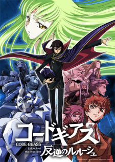
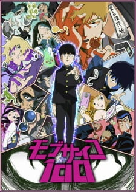
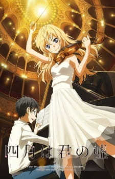

Hunter X Hunter
Hunter X Hunter
La historia tiene como protagonista a Gon Freecss, un niño de doce años que desea encontrar a su padre a toda costa, por lo que decide convertirse en cazador, justo como él, y de alguna forma hallar su paradero.
 Akame ga Kill
Akame ga Kill
La historia nos lleva a través de las aventuras de Tatsumi, un joven que viaja a la capital imperial desde su pequeña aldea rural para unirse al ejército. A su llegada a la gran ciudad, este es robado por una bella joven. Tras ser robado y sin dinero, es acogido por la bondadosa Lady Aria. Pero justo cuando sus sueños en la gran Capital vuelen a estar a su alcance, una vez más, la mansión de Lady Aria es asediada por Night Raid, un equipo de asesinos despiadados que luchan contra la tiranía de la Ciudad Imperial.
 Ansatsu Kyoshitsu
Ansatsu Kyoshitsu
La historia sigue la vida cotidiana de Koro-sensei, un peculiar maestro con la apariencia similar a la de un pulpo, y la de sus estudiantes, cuya principal tarea es asesinarlo para evitar que la Tierra sea destruida.

Code Geass
El imperio de Brittania invadió Japón usando robots gigantes denominados Knightmare Frames. Japón pasó a ser denominado como Área 11 y sus habitantes, los onceavos. Un brittanico que en ese entonces vivía en Japón, Lelouch, le jura a su amigo Suzaku que él destruiría Brittania.
 Death Note
Death Note
La historia se centra en Light Yagami, un estudiante de escuela secundaria. Un día, encuentra un cuaderno con poderes sobrenaturales llamado "Death Note", con el cual es capaz de matar personas si se escriben los nombres de estas en él, a la vez que si el portador visualiza mentalmente la cara de quien quiere asesinar.9 Light, percatándose del potencial del cuaderno, intenta eliminar a todos los criminales y crear un mundo donde no exista la maldad; sin embargo, un misterioso detective privado que se hace llamar L, famoso mundialmente por resolver grandes casos en el pasado, tratará de frustrar sus planes.
 Full Metal Alchemist: Brotherhood
Full Metal Alchemist: Brotherhood
Este anime nos cuenta la historia de los hermanos Edward (15 años) y Alphonse (14), quienes después de la muerte de su madre (cuando tenían la tierna edad que podéis ver en el gif superior), rompieron el mayor tabú de la alquimia al querer resucitarla: la transmutación humana. Como consecuencia, y debido a la ley del intercambio equivalente, Edward pierde su pierna izquierda y su hermano menor todo su cuerpo. Para salvarlo, Edward sella el alma de Alphonse a una gran armadura de hierro y sacrifica a cambio su brazo derecho.
 Haikyuu
Haikyuu
La historia sigue la carrera de Shoyo Hinata, que decide dedicarse al voleibol tras ver a los Pequeños Gigantes cuando todavía va a primaria. Pero en el último torneo en secundaria, su equipo recibe una auténtica paliza del equipo de Tobio Kageyama. Sin embargo, Hinata también se une al equipo de voleibol al entrar al instituto para así vengarse de Kageyama pero, para su sorpresa, Kageyama también está en el equipo. Así, dos antiguos rivales forman un equipo imbatible con el que buscan conseguir el campeonato nacional.
 Horimiya
Horimiya
Kyôko es una alumna modélica y popular que al llegar a casa se convierte en una chica hogareña muy discreta. Miyamura, su compañero de clase, es un tipo del montón con cierto aire de friki que en sus ratos libres se transforma en un chico muy atractivo con piercings y mucho estilo. ¿Qué ocurriría si Izumi y Kyôko descubrieran la cara oculta el uno del otro?
 Jujutsu Kaisen
Jujutsu Kaisen
Jujutsu Kaisen es un anime que sigue la historia de Yuji Itadori, un estudiante de secundaria que vive en Sendai junto a su abuelo. Aunque tenga un talento innato para el deporte, evita de todas formas el equipo de pista debido a su aversión al atletismo.
 Kimetsu no Yaiba
Kimetsu no Yaiba
El protagonista de la historia es Kamado Tanjiro, un joven que tiene un gran corazón, pero que también presume sobrada inteligencia. Su historia resulta conmovedora porque se dedica a la venta de carbón para sobrevivir al lado de su familia. Sin embargo, la tragedia toca a su puerta cuando sus seres queridos son asesinatos.
 My Hero Academia
My Hero Academia
Izuku Midoriya, un chico sin poderes que, aunque nace en una sociedad en la que tener poderes especiales es de lo más normal, tiene su propio sueño de convertirse en un héroe que salve a las personas con una sonrisa en el rostro.

Mob Psycho 100
Mob Psycho 100 es una serie anime que sigue la historia de Shigeo Kageyama, un chico estudiante apodado Mob por carecer de sentido de presencia. Aunque parece una persona un tanto discreta, de hecho, es un poderoso Esper con un inmenso poder psíquico.
 NO GAME/NO LIFE
NO GAME/NO LIFE
La historia se centra en la vida de Sora y Shiro, un hermano y una hermana cuya reputación como brillantes jugadores han dado lugar a leyendas urbanas en todo tipo a través de Internet. Estos dos jugadores aún consideran que el mundo real es como cualquier otro “juego de mierda”. Un día, los dos hermanos son invitados por un chico llamado como “Dios” para jugar en un mundo alternativo.
 Noragami
Noragami
Yato es un dios menor cuyo sueño es tener una gran masa de seguidores que lo adoren y canten plegarias hacia él. Por desgracia par él, su sueño está lejos de hacerse realidad, ya que no tiene ni siquiera un solo santuario dedicado hacia su persona. Para empeorar las cosas, el único devoto que tenía para que le ayudase a resolver problemas de la gente, acababa de abandonar su puesto.
 One Piece
One Piece
Un chico llamado Monkey D. Luffy, quién se inspiró en Shanks, un pirata que le salvó la vida, para convertirse en el Rey de los Piratas. Al comienzo de la serie, veinticuatro años antes de la historia actual, un pirata llamado Gol D. Roger, conocido como el Rey de los Piratas, fue ejecutado, pero antes de su muerte, le dijo a la multitud de su tesoro, el One Piece.
 One Punch Man
One Punch Man
Saitama es un poderoso superhéroe capaz de derrotar a quien se le ponga por delante con un único golpe de su puño. El joven de 25 años vive en la Ciudad Z, una zona que continuamente está siendo invadida por monstruos que aparecen de la nada. Saitama siempre consigue derrotarles pero debido a su poder, las peleas no van más allá del primer golpe.
 Steins;Gate
Steins;Gate
Cuando el joven Rintaro Okabe inventa un móvil de microondas capaz de enviar e-mails al pasado, su mundo cambia para siempre… literalmente. Akihabara, verano de 2010. Rintaro Okabe es un brillante estudiante universitario tan seguro de sí mismo como inconsciente de su falta de madurez. Okabe es el fundador del Instituto de Investigación de Artefactos del Futuro, un laboratorio en el que él y dos amigos desarrollan diariamente toda clase de inventos. Entre ellos se encuentra un prototipo de móvil de microondas con el que accidentalmente envía un e-mail al pasado. Llevado por la incontrolable emoción de haber creado el invento del siglo, interfiere de nuevo con el pasado por simple curiosidad. Como consecuencia, una gran tragedia que afecta al mundo entero se despliega ante él.

Shigatsu wa Kimi no Uso
Kousei Arima es un prodigio en el piano y cualquiera dentro del mundo de la música conoce su nombre; pero cuando su madre y también maestra fallece, se desmorona en la mitad de un recital y desde ese momento es incapaz de oír el sonido de su piano aunque no tenga problemas de oído. Dos años después, Kousei sigue sin tocar el piano y ve el mundo como algo monótono, sin color. Se conformaba con llevar una vida tranquila junto a sus amigos, Tsubaki y Watari, hasta que una chica lo cambia todo. Kaori Miyazono es una chica muy guapa y una gran violinista cuyo carácter queda reflejado en su modo de tocar. Kaori ayudará a Kousei a volver al mundo de la música y a romper con la rígida estructura musical que Kousei ha tenido siempre presente en su vida.
 Shingeki no Kyojin
Shingeki no Kyojin
La Tierra se encuentra en caos y devastada por los Titanes, gigantes humanoides que devoran a humanos. El adolescente Eren Jaeger, tras sufrir la destrucción de su ciudad y la pérdida de su madre a manos de los Titanes, dedicará su tiempo a destruirlos y acabar con esa amenaza que pone en peligro la supervivencia de la humanidad.
 Bleach
Bleach